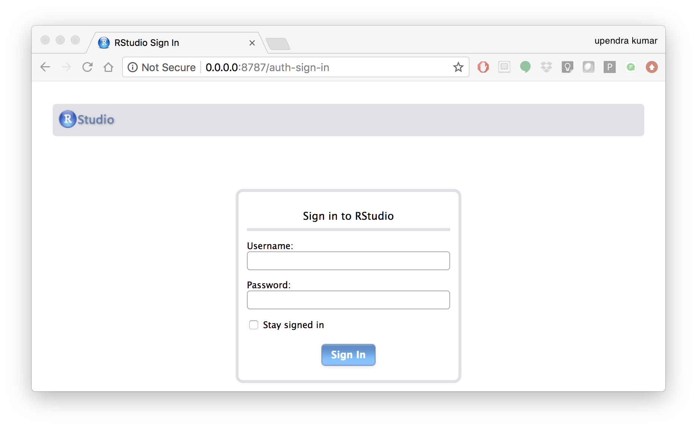

Advanced Docker¶

This is the advanced session of Docker. The topics include Managing data in Docker containers, Docker compose for building multiple containers, Docker for Data science, etc.
1. Managing data in Docker¶
From the above examples, we learned that a running Docker container is an isolated environment created from an Docker image. This means, although it is possible to store data within the “writable layer” of a container, there are some limitations:
- The data doesn’t persist when that container is no longer running, and it can be difficult to get the data out of the container if another process needs it.
- A container’s writable layer is tightly coupled to the host machine where the container is running. You can’t easily move the data somewhere else.
Docker offers three different ways to mount data into a container from the Docker host: volumes, bind mounts, or tmpfs volumes. For simplicity, we will only discuss bind mounts here, even though volumes is the more powerful and usable option for most use cases.
Note
If you’re using Docker for Windows make sure you have shared your drive.
1.1 Bind mounts¶
Bind mounts: When you use a bind mount, a file or directory on the host machine is mounted into a container.

Warning
- One side effect of using bind mounts, for better or for worse, is that you can change the host filesystem via processes running in a container, including creating, modifying, or deleting important system files or directories. This is a powerful ability which can have security implications, including impacting non-Docker processes on the host system.
- If you use bind-mount a file or directory that does not yet exist on the Docker host, Docker does not automatically create it for you, but generates an error. So make sure that file or directory exists before mounting it to the container.
1.1.1 Start a container with a bind mount¶
To demonstrate how bind mount works, we will use the diamondblast:1.0 image that we created in docker intro section
- Download some test data for testing
diamondblast:1.0image using bind mount method
$ mkdir diamond_test && cd diamond_test
$ wget https://raw.githubusercontent.com/upendrak/diamond_blast_docker/master/mouse.1.protein.faa
$ wget https://raw.githubusercontent.com/upendrak/diamond_blast_docker/master/zebrafish.1.protein.faa
- Making the blast database
In order to set up a reference database for DIAMOND, the makedb command needs to be executed with the following command line:
$ docker run --rm -v `pwd`:/data upendradevisetty/diamondblast:1.0 makedb --in /data/zebrafish.1.protein.faa -d /data/zebrafish_db
This will create a binary DIAMOND database file with the specified name zebrafish_db.dmnd in the diamond_test direcotry
- Running the alignment
The alignment task may then be initiated using the blastp command like this:
$ docker run -v `pwd`:/data upendradevisetty/diamondblast:1.0 blastp --db /data/zebrafish_db -q /data/mouse.1.protein.faa -o /data/matches.m
The output file here is specified with the –o option and named matches.m8. By default, it is generated in BLAST tabular format.
Note
-v Consists of three fields, separated by colon characters (:).
- The first field is the path of the directory or file.
- The second field is the path where the file or directory are mounted in the container.
- The third field is optional, and is a comma-separated list of options, such as ro.
You can use docker inspect $(docker ps -lq) | grep -A 9 Mounts to verify that the bind mount was created correctly. Look for the “Mounts” section
$ docker inspect $(docker ps -lq) | grep -A 9 Mounts
"Mounts": [
{
"Type": "bind",
"Source": "/home/upendra/diamond_test",
"Destination": "/data",
"Mode": "",
"RW": true,
"Propagation": "rprivate"
}
],
This shows that the mount is a bind mount, it shows the correct source and target, it shows that the mount is read-write, and that the propagation is set to rprivate.
2. Docker Compose for multi container apps¶
Docker Compose is a tool for defining and running multi-container Docker applications. With Compose, you use a YAML file to configure your application’s services. Then, with a single command, you create and start all the services from your configuration. To learn more about all the features of Compose, see the list of features
Main advantages of Docker compose include:
- Your applications can be defined in a YAML file where all the options that you used in
docker runare now defined (Reproducibility). - It allows you to manage your application as a single entity rather than dealing with individual containers (Simplicity).
Let’s now create a simple web app with Docker Compose using Flask and Redis. We will end up with a Flask container and a Redis container all on one host.
2.1.1 Clone the repo that container Docker compose code
$ git clone https://github.com/upendrak/compose_flask.git
$ cd compose_flask
In the github repo you will find 4 files - Dockerfile, requirements.txt file, app.py and finally docker-compose.yml file
Using Compose is a three-step process, which is best explained with a short example.
- First, you define your app’s environment with a
Dockerfileso it can run anywhere - Next, you define the components that make up your app in
docker-compose.ymlso they can be run together in an isolated environment
A brief explanation of docker-compose.yml is as below:
restart: alwaysmeans that it will restart whenever it fails.- We define two services, web and redis.
- The web service builds from the Dockerfile in the current directory.
- Forwards the container’s exposed port (5000) to port 8888 on the host.
- Mounts the project directory on the host to /code inside the container (allowing you to modify the code without having to rebuild the image).
depends_onlinks the web service to the Redis service.- The redis service uses the latest Redis image from Docker Hub.
- Lastly, run docker-compose up and Compose will start and run your entire app, determining the right order to start everything in, and building and pulling any images as necessary
$ docker-compose up -d
Building web
Step 1/5 : FROM python:2.7
2.7: Pulling from library/python
f49cf87b52c1: Already exists
7b491c575b06: Already exists
b313b08bab3b: Already exists
51d6678c3f0e: Already exists
09f35bd58db2: Already exists
f7e0c30e74c6: Pull complete
c308c099d654: Pull complete
339478b61728: Pull complete
Digest: sha256:8cb593cb9cd1834429f0b4953a25617a8457e2c79b3e111c0f70bffd21acc467
Status: Downloaded newer image for python:2.7
---> 9e92c8430ba0
Step 2/5 : ADD . /code
---> 746bcecfc3c9
Step 3/5 : WORKDIR /code
---> c4cf3d6cb147
Removing intermediate container 84d850371a36
Step 4/5 : RUN pip install -r requirements.txt
---> Running in d74c2e1cfbf7
Collecting flask (from -r requirements.txt (line 1))
Downloading Flask-0.12.2-py2.py3-none-any.whl (83kB)
Collecting redis (from -r requirements.txt (line 2))
Downloading redis-2.10.6-py2.py3-none-any.whl (64kB)
Collecting itsdangerous>=0.21 (from flask->-r requirements.txt (line 1))
Downloading itsdangerous-0.24.tar.gz (46kB)
Collecting Jinja2>=2.4 (from flask->-r requirements.txt (line 1))
Downloading Jinja2-2.10-py2.py3-none-any.whl (126kB)
Collecting Werkzeug>=0.7 (from flask->-r requirements.txt (line 1))
Downloading Werkzeug-0.14.1-py2.py3-none-any.whl (322kB)
Collecting click>=2.0 (from flask->-r requirements.txt (line 1))
Downloading click-6.7-py2.py3-none-any.whl (71kB)
Collecting MarkupSafe>=0.23 (from Jinja2>=2.4->flask->-r requirements.txt (line 1))
Downloading MarkupSafe-1.0.tar.gz
Building wheels for collected packages: itsdangerous, MarkupSafe
Running setup.py bdist_wheel for itsdangerous: started
Running setup.py bdist_wheel for itsdangerous: finished with status 'done'
Stored in directory: /root/.cache/pip/wheels/fc/a8/66/24d655233c757e178d45dea2de22a04c6d92766abfb741129a
Running setup.py bdist_wheel for MarkupSafe: started
Running setup.py bdist_wheel for MarkupSafe: finished with status 'done'
Stored in directory: /root/.cache/pip/wheels/88/a7/30/e39a54a87bcbe25308fa3ca64e8ddc75d9b3e5afa21ee32d57
Successfully built itsdangerous MarkupSafe
Installing collected packages: itsdangerous, MarkupSafe, Jinja2, Werkzeug, click, flask, redis
Successfully installed Jinja2-2.10 MarkupSafe-1.0 Werkzeug-0.14.1 click-6.7 flask-0.12.2 itsdangerous-0.24 redis-2.10.6
---> 5cc574ff32ed
Removing intermediate container d74c2e1cfbf7
Step 5/5 : CMD python app.py
---> Running in 3ddb7040e8be
---> e911b8e8979f
Removing intermediate container 3ddb7040e8be
Successfully built e911b8e8979f
Successfully tagged composeflask_web:latest
And that’s it! You should be able to see the Flask application running on <ipaddress>:8888

3. Improving your data science workflow using Docker containers (Containerized Data Science)¶
For a data scientist, running a container that is already equipped with the libraries and tools needed for a particular analysis eliminates the need to spend hours debugging packages across different environments or configuring custom environments.
But why Set Up a Data Science Environment in a Container?
- One reason is speed. We want data scientists using our platform to launch a Jupyter or RStudio or TensorFlow session in minutes, not hours. We also want them to have that fast user experience while still working in a governed, central architecture (rather than on their local machines).
- Containerization benefits both data science and IT/technical operations teams.
- Ultimately, containers solve a lot of common problems associated with doing data science work at the enterprise level. They take the pressure off of IT to produce custom environments for every analysis, standardize how data scientists work, and ensure that old code doesn’t stop running because of environment changes. To start using containers and our library of curated images to do collaborative data science work, request a demo of our platform today.
- Configuring a data science environment can be a pain. Dealing with inconsistent package versions, having to dive through obscure error messages, and having to wait hours for packages to compile can be frustrating. This makes it hard to get started with data science in the first place, and is a completely arbitrary barrier to entry.
Thanks to the rich ecosystem, there are already several readily available images for the common components in data science pipelines. Here are some Docker images to help you quickly spin up your own data science pipeline:
Motivation: Say you want to play around with some cool data science libraries in Python or R but what you don’t want to do is spend hours on installing Python or R, working out what libraries you need, installing each and every one and then messing around with the tedium of getting things to work just right on your version of Linux/Windows/OSX/OS9 — well this is where Docker comes to the rescue! With Docker we can get a Jupyter ‘Data Science’ notebook stack up and running in no time at all. Let’s get started! We will see few examples of thse in the following sections…
Note
The above code can be found in this github
- Launch a Jupyter notebook conatiner
Docker allows us to run a ‘ready to go’ Jupyter data science stack in what’s known as a container:
$ ezj
/usr/bin/python3
DEBUG: using python version 3
DEBUG: downloading anaconda binary, may take a few minutes
DEBUG: install Anaconda
PREFIX=/opt/anaconda3
installing: python-3.6.4-hc3d631a_1 ...
The last line is a URL that we need to copy and paste into our browser to access our new Jupyter stack:
Copy/paste this URL into your browser when you connect for the first time,
to login with a token:
http://149.165.169.252:8888/?token=13fffde91fc7006441e4e68656bb1385945fc26216b446be
Warning
Do not copy and paste the above URL in your browser as this URL is specific to my environment.
Once you’ve done that you should be greeted by your very own containerised Jupyter service!

To create your first notebook, drill into the work directory and then click on the ‘New’ button on the right hand side and choose ‘Python 3’ to create a new Python 3 based Notebook.

Now you can write your python code. Here is an example
{kind=link}
{kind=link}
Note
If you want a R kernel in Jupyter notebook, then you should run it as ezj -R
{kind=link}
To shut down the container once you’re done working, simply hit Ctrl-C in the terminal/command prompt. Your work will all be saved on your actual machine in the path we set in our Docker compose file. And there you have it — a quick and easy way to start using Jupyter notebooks with the magic of Docker.
- Launch a R-Studio container
Next, we will see a Docker image from Rocker which will allow us to run RStudio inside the container and has many useful R packages already installed.

$ docker run --rm -d -v `pwd`:/data -p 8787:8787 rocker/rstudio:3.5.1
330242b370fa38c2158f3ba31b09fb5ef41bc64763baeebdeff10008f3d37186
Note
–rm ensures that when we quit the container, the container is deleted. If we did not do this, everytime we run a container, a version of it will be saved to our local computer. This can lead to the eventual wastage of a lot of disk space until we manually remove these containers.
The command above will lead RStudio-Server to launch invisibly. To connect to it, open a browser and enter <ipaddress>:8787 on cloud
{kind=link}
Enter rstudio as username and password. Finally Rstudio shows up and you can run your R command from here
{kind=link}
In order to see the directory that is currently mounted on inside the container, click … in the right hand down window of Rstudio which open up a dialog box. Now enter /data which is the location of mounted directory inside the container
{kind=link}
{kind=link}